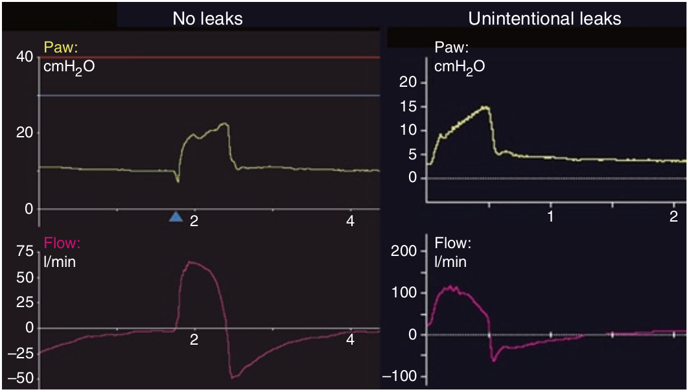

افزایش شدت جریان دمی همراه با کاهش شدت جریان بازدمی ممکن است دلیل وجود نشت تصادفی در سیستم باشد. با مقایسه سطح زیر منحنی شدت جریان دمی با بازدمی می توانید این موضوع را تشخیص دهید. اگر هیچ نشتی وجود نداشته باشد، این دو با هم برابر هستند. ولی اگر سطح زیر منحنی شدت جریان دمی بیشتر از بازدمی باشد به معنای وجود نشت قسمتی از حجم دمی است.

وجود نشت تصادفی در سیستم از روی کدام مورد مشخص میشود؟
۱ - شدت جریان بالای دمی
۲ - شدت جریان کم بازدمی
۳ - اختلاف سطح زیر منحنی شدت جریان دمی و بازدمی
۴ - وجود نوسانات در منحنی شدت جریان
۵ - کاهش فشار هنگام هواگیری ریه